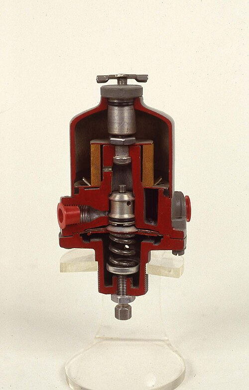
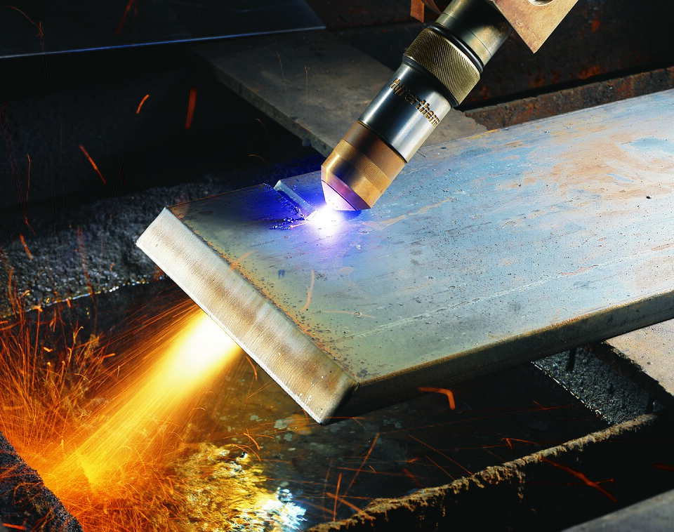

Why a pneumatic gauge can read normally when air delivery fails
Understand static pressure, pressure drop, regulation and stored air. Use readings taken under the same demand to localise a restriction.
Pressure tells you what air can do at a point
Gauge pressure measures the difference from local atmosphere. A closed line with no leaks can reach the set pressure even if its supply opening is narrow. Flow measures the amount of air delivered per unit time. The same pressure reading at rest can hide different flow capacities. Compressed air expands as its pressure falls, so compare flow ratings on the stated reference basis and pressure readings in consistent units.

Photo from Museo Nazionale della Scienza e della Tecnologia Leonardo da Vinci, Milan, scaled with labels. Original photograph · CC BY-SA 4.0.


Photo by Hypertherm, scaled with labels. Original photograph and free-use notice.

Watch the reading change when air moves. The clip distinguishes the pressure-test function from a cutting operation and shows why the no-flow reading alone is incomplete. Hypertherm's pressure-test demonstration.
Measure where the loss occurs
When air flows, pipes, valves, filters and couplings produce pressure losses. A narrow passage, a long run or a loaded filter can dominate the loss. At a steady operating point and along one series path, the total drop equals the sum of the drops between measured points. Pressure before a restriction and downstream at the machine should be recorded during the same demand. Shared loads can make a fault appear only when another machine cycles. Atlas Copco's air-tool installation guide.
Worked calculation. A line reads 6.0 bar at the regulator outlet, 5.5 bar after the filter and 4.0 bar at a tool inlet during one test. That is 0.5 bar from the regulator outlet to the filter outlet and 1.5 bar from the filter outlet to the inlet. The larger measured loss is the hose and fittings in the second span. Localise within that span before calling one component bad.
| Part | What it does | How it can change the readings |
|---|---|---|
| Receiver | Stores compressed air and can supply brief demand peaks. | Pressure can hold briefly and fall during a sustained load if supply cannot keep up. |
| Regulator | Controls downstream pressure within its supply and flow range. | The set value may be present at rest while the outlet sags under demand. |
| Filter and water separation | Remove particles and some condensate. Air quality requirements depend on the machine. | A loaded element adds a drop. Water or oil at the tool can still cause faults even when pressure looks adequate. |
Confirm the specified air quality, flow and working pressure for the tool. An air preparation train can include shutoff, filter, regulator or dryer as needed. Use the correct service manual for depressurisation because upstream shutoff alone can leave trapped air. Festo's air preparation overview · P102 compare a plasma air path under demand · P56 apply the same thinking to a cylinder.